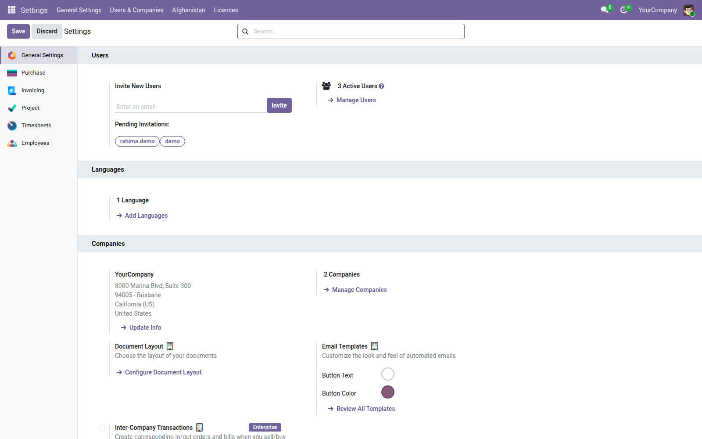

<section style="padding:32px 0;font-family:Roboto,Helvetica,Arial,sans-serif;color:#2b3a34;">
  <div style="max-width:900px;margin:0 auto;padding:0 24px;">

    <p style="font-size:12px;letter-spacing:.14em;text-transform:uppercase;color:#0b6b57;font-weight:600;margin:0 0 10px;">Localization</p>
    <h1 style="font-size:40px;line-height:1.1;margin:0 0 14px;font-weight:700;">Jalali Calendar for Odoo</h1>
    <p style="font-size:19px;line-height:1.55;color:#4c5a55;max-width:640px;margin:0 0 28px;">Hijri-Shamsi dates everywhere in Odoo, with the <strong>Afghan</strong> month names as well as the Iranian ones. Dates stay stored as Gregorian, so nothing else in your database changes.</p>

    <div style="background:#f6f7f5;border-left:3px solid #0b6b57;padding:18px 22px;margin:0 0 32px;font-size:16px;line-height:1.6;"><strong>Built for Afghanistan.</strong> Most Jalali modules ship only the Iranian month names, which are wrong on every Afghan document. This one carries Hamal, Sawr and Jawza alongside Farvardin, Ordibehesht and Khordad — and Pashto month names too.</div>

    <div style="margin:0 0 34px;">
      
      <div style="font-size:13px;color:#75837d;padding-top:8px;">The Jalali settings, per company and overridable per user</div>
    </div>

    <h2 style="font-size:24px;margin:0 0 16px;font-weight:600;">Afghan or Iranian, your choice</h2>
    <table style="width:100%;border-collapse:collapse;margin:0 0 30px;font-size:15px;">
      <thead><tr style="background:#edf0ec;">
        <th style="text-align:left;padding:10px 14px;border-bottom:1px solid #dce1db;">Month</th>
        <th style="text-align:left;padding:10px 14px;border-bottom:1px solid #dce1db;">Afghan</th>
        <th style="text-align:left;padding:10px 14px;border-bottom:1px solid #dce1db;">Pashto</th>
        <th style="text-align:left;padding:10px 14px;border-bottom:1px solid #dce1db;">Iranian</th>
      </tr></thead>
      <tbody>
        <tr><td style="padding:9px 14px;border-bottom:1px solid #eef1ed;">1</td><td style="padding:9px 14px;border-bottom:1px solid #eef1ed;">Hamal / <bdi>حمل</bdi></td><td style="padding:9px 14px;border-bottom:1px solid #eef1ed;"><bdi>وری</bdi></td><td style="padding:9px 14px;border-bottom:1px solid #eef1ed;">Farvardin / <bdi>فروردین</bdi></td></tr>
        <tr><td style="padding:9px 14px;border-bottom:1px solid #eef1ed;">2</td><td style="padding:9px 14px;border-bottom:1px solid #eef1ed;">Sawr / <bdi>ثور</bdi></td><td style="padding:9px 14px;border-bottom:1px solid #eef1ed;"><bdi>غويی</bdi></td><td style="padding:9px 14px;border-bottom:1px solid #eef1ed;">Ordibehesht / <bdi>اردیبهشت</bdi></td></tr>
        <tr><td style="padding:9px 14px;border-bottom:1px solid #eef1ed;">6</td><td style="padding:9px 14px;border-bottom:1px solid #eef1ed;">Sunbula / <bdi>سنبله</bdi></td><td style="padding:9px 14px;border-bottom:1px solid #eef1ed;"><bdi>وږی</bdi></td><td style="padding:9px 14px;border-bottom:1px solid #eef1ed;">Shahrivar / <bdi>شهریور</bdi></td></tr>
      </tbody>
    </table>

    <h2 style="font-size:24px;margin:0 0 16px;font-weight:600;">What you get</h2>
    <ul style="font-size:16px;line-height:1.7;color:#4c5a55;margin:0 0 30px;padding-left:20px;">
      <li><strong>Any date field</strong> — add <code>widget="jalali_date"</code> and type dates in Jalali</li>
      <li><strong>Any report</strong> — one <code>t-options</code> attribute prints Jalali</li>
      <li><strong>Three languages</strong> — English, Dari and Pashto, month and weekday names included</li>
      <li><strong>Saturday-first week</strong> — matching the Afghan working week</li>
      <li><strong>Persian numerals</strong> — optional per company</li>
      <li><strong>Per-user override</strong> — staff working with foreign partners stay on Gregorian</li>
      <li><strong>Timezone aware</strong> — an evening entry in Kabul does not slip to the day before</li>
      <li><strong>Nothing migrates</strong> — dates stay Gregorian in the database</li>
    </ul>

    <h2 style="font-size:24px;margin:0 0 16px;font-weight:600;">Accuracy you can check</h2>
    <p style="font-size:16px;line-height:1.65;color:#4c5a55;margin:0 0 14px;">Verified against the reference implementation over every single day from 1900 to 2100 — 73,414 dates — plus every leap year and month length in between. The screen and the printed page use two separate implementations, and the test suite diffs them against each other on every run, so a payslip can never show a different date from the form it came from.</p>
    <p style="font-size:16px;line-height:1.65;color:#4c5a55;margin:0 0 30px;">Supported range: Jalali years −61 to 3177.</p>

    <div style="border-top:1px solid #dce1db;padding-top:20px;font-size:14px;color:#75837d;">Odoo 19.0 · depends on <code>base</code>, <code>base_setup</code> and <code>web</code> only — no third-party libraries.</div>

  </div>
</section>
